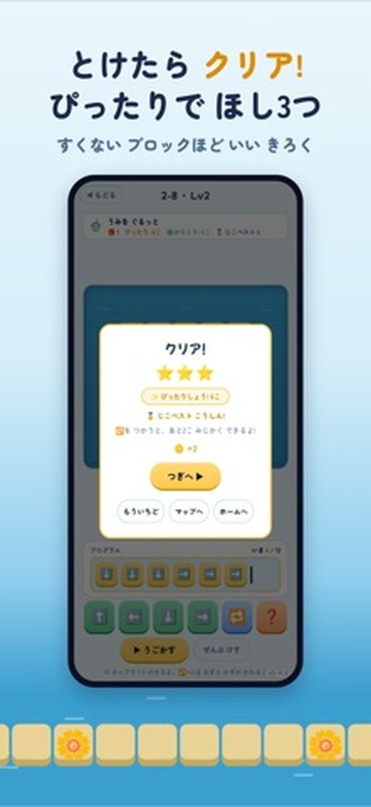
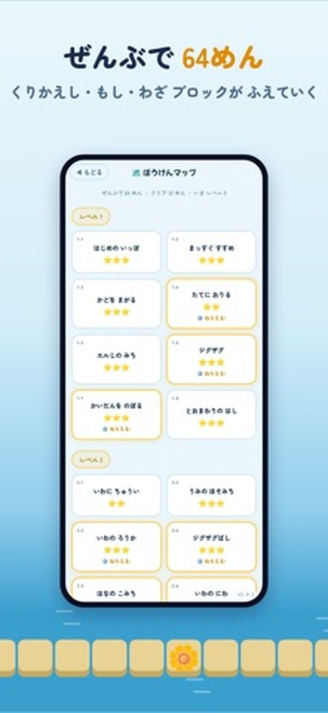
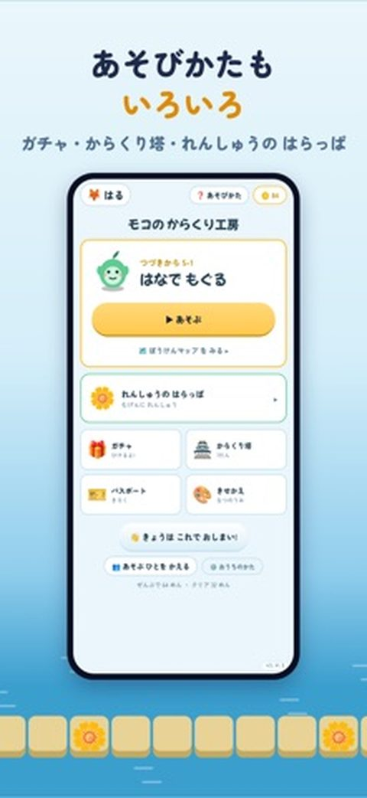

For ages about 4–12. No ads, no data collected.

まなびクエストManabi Questまなびクエスト
iPhone / iPadようちえん〜小6K – Grade 6Japanese languageJapan App Store only
ひらがな・かず・漢字・算数・英語・理科など 9つの教科を、まいにち5分の「ぼうけん」に。最初の問題で実力をたしかめて、その子にちょうどいいレベルから始まります。
Nine subjects — hiragana, numbers, kanji, math, English, science and more — turned into a 5-minute daily quest. It starts at the level that fits your child.
This app is in Japanese and available on the Japan App Store only. Screenshots are in Japanese.
モコのからくり工房Moco's Workshop: Coding Puzzle
iPhone / iPadプログラミングの入口First steps in coding日本語 / EnglishEnglish / 日本語
やじるしのブロックをならべて、ロボットの「モコ」をたからばこまで運ぶパズル。「くりかえし」「もし」「わざ」を、ことばを覚えなくても手で覚えられます。全64面、はじめの12面は無料。
Line up arrow blocks to guide Moco the robot to the treasure chest. Kids pick up loops, conditions and functions with their hands, no jargon needed. 64 stages — the first 12 are free.



